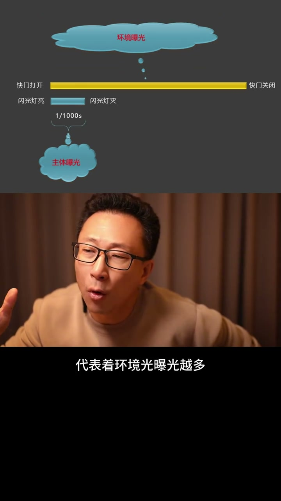
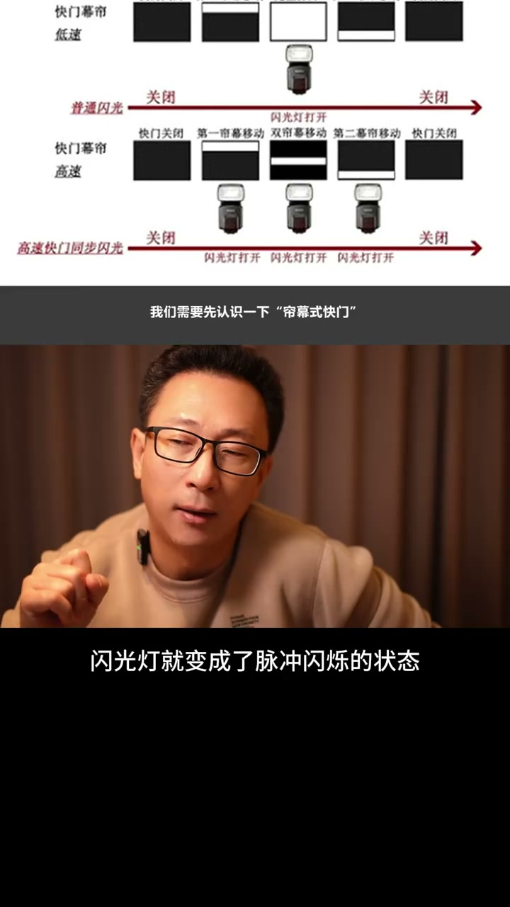
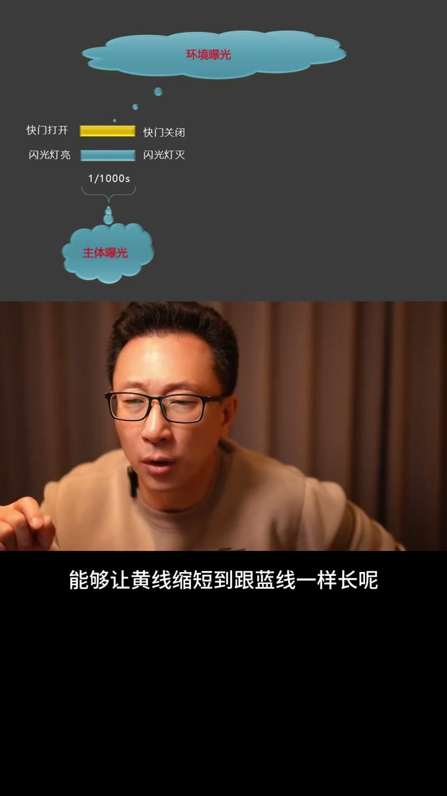

内容要点
[00:00] 用閃光燈快門速度最好定在250分之一秒
[00:04] 250分之一秒是閃光燈效率最高的快門速度
[00:07] 也是目前主流相機閃光燈最高的同步速度
[00:11] 有些相機可能只有200分之一秒或者180分之一秒
[00:15] 這個值在你購買相機產品的說明書上有
[00:18] 或者你直接擺度一下某某型號的相機都能找得到
[00:21] 這裡說的閃光燈極限效率
[00:24] 甚至你的閃光燈功率不是太高
[00:26] 但是又想在比較亮的陽光或者逆光下壓光時的做法
[00:31] 如果是一天夜景或者是室內就不需要
[00:34] 我們平常用的主流閃光燈全光輸出
[00:37] 閃爍的時間大概是在千分之一秒之內就能完成
[00:41] 如果是小功率的輸出
[00:42] 甚至幾萬分之一秒之內就能完成
[00:45] 這是因為這麼短的閃爍時間
[00:47] 所以閃光燈才有凝固性一說
[00:50] 它能夠瞬間把運動的物體凝固住
[00:53] 這也是我們用閃光燈拍攝的時候
[00:55] 主體成像特別紮實的原因
[00:57] 對同一款閃光燈來說輸出越小
[01:00] 它的凝固性就越強
[01:01] 比如我們平常用的旗艦型機警燈
[01:04] 它在最小輸出時凝固性甚至可以達到兩萬分之一秒
[01:08] 在這種情況之下拍攝對象的高速運動
[01:11] 或者攝影師手的劇烈抖動都不影響成像的紮實
[01:15] 凝固性是閃光燈區別於長亮燈最好玩的一點
[01:19] 你可以用來拍一些定格的畫面
[01:21] 暗光拍攝中如果你嫌棄自己的相機的高感不夠好
[01:25] 甚至可以用非常低的快門速度
[01:27] 還能保證拍片不糊
[01:28] 所以盡量買功率高一點的閃光燈
[01:31] 然後減小輸出拍攝
[01:33] 效果會比小功率的閃光燈好很多
[01:35] 無論是凝固性還是回電速度
[01:38] 或者拍攝張數上都好很多
[01:40] 明白這個道理之後你就不會問我
[01:42] 多少功率的燈夠不夠了
[01:44] 當然功率更高的燈會更重更貴
[01:47] 隨著你要找到一個平衡點
[01:48] 在可能的情況之下
[01:50] 功率盡量高一點總是不會錯的
[01:52] 來看一下這張示意圖
[01:54] 黃線代表著快門打開的時間
[01:56] 藍線代表著閃光燈閃爍的時間
[01:59] 我們先假設拍張逆光的人物
[02:01] 拍攝主體曝光主要來自於閃光燈
[02:04] 你會發現閃光燈很快就會完成了
[02:07] 對人物主體的曝光
[02:08] 剩下的黃線的長短就影響著黃鏡光的亮暗
[02:12] 黃線越長代表著環境光曝光越多
[02:15] 環境越亮
[02:16] 黃線越短代表著環境光曝光越短
[02:19] 環境也越暗
[02:21] 所以說在陽光下有效的壓光
[02:23] 我們就有必要把黃線做得盡量短
[02:25] 可不可以短於250分之1秒呢
[02:28] 或者說短的跟藍線一樣長度呢
[02:30] 如果黃線和藍線長度一樣
[02:33] 就是代表著壓光效率最高的那個點
[02:36] 可惜相機做不到
[02:37] 因為它機械連目式快門移動的時間
[02:40] 最低也要需要250分之1秒
[02:43] 如果是電子快門的族行讀取
[02:45] 那速度更慢
[02:46] 這也是最高同步速度的由來
[02:48] 所以說黃線最短的極限是250分之1秒
[02:52] 這也是我們為什麼用閃光燈拍攝時
[02:54] 把相機快門設置到250分之1秒的原因
[02:57] 有人說可以打開高速同步
[02:59] 這樣可以把快門提高到250分之1秒以上
[03:03] 高速同步是一個特殊的模式
[03:05] 快門不再是打開曝光放下這種狀態
[03:08] 而變成了夾縫掃描底片的狀態
[03:11] 為了保證每一個夾縫都被閃光燈照到
[03:14] 閃光燈就變成了脈衝閃爍的狀態
[03:17] 它單車的亮度會極具的衰減
[03:19] 開啟高速同步並不有助於壓光
[03:22] 反倒會讓閃光燈的效率下降
[03:24] 所以在極限用燈的情況之下
[03:26] 盡量不要開高速同步
[03:28] 外景為了虛化背景大光圈拍攝
[03:31] 速度限制不到250分之1秒以下怎麼辦呢
[03:34] 有些攝影師使用了鏡頭減光鏡
[03:37] 這是個辦法
[03:38] 不過稍現麻煩
[03:39] 我覺得需要用就用吧
[03:41] 最多再買一個燈疊加或者換功率更高的燈
[03:44] 那麼有沒有可能一種新的技術
[03:47] 能夠讓黃線縮短的跟藍線一樣長呢
[03:51] 現在市面上唯一的一款全域快門相機
[03:54] 索尼的A93
[03:56] 它的快門不是聯目式
[03:57] 也不是足行讀取的電子快門
[03:59] 它是瞬間把所有像素同時讀取的全域快門
[04:03] 它不再受限於最高同步速度的限制
[04:06] 所以使用A930用閃光燈拍攝
[04:09] 一支小小的機冰閃
[04:11] 就能頂得上一支400瓦的外拍燈的亮度
[04:14] 所以你嫌棄很重的閃光燈
[04:16] 在這個相機上就解決了


